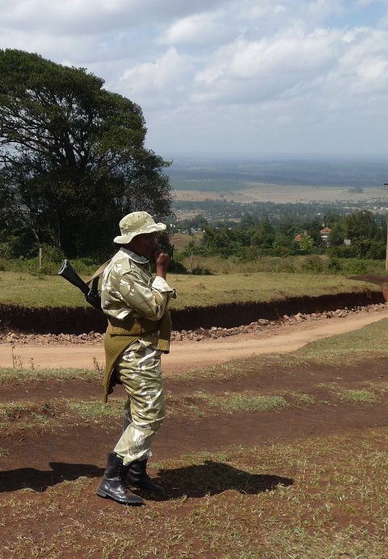
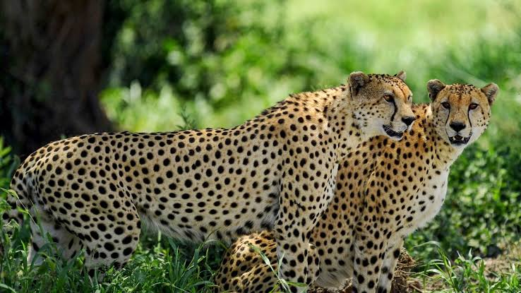

Safeguarding National and Global Biodiversity • Expansive Territorial Management: KWS directly manages about 8.2% of Kenya’s total land mass, spanning across dozens of national parks, reserves, marine parks, and sanctuaries. • Targeted Species Recovery: Through dedicated anti-poaching initiatives and specialized habitats (like the Ngulia Rhino Sanctuary), KWS has successfully overseen massive recoveries of critically endangered species, helping Kenya host over 2,100 rhinos. Its 2024–2028 Strategic Plan aims for a further 15% species growth recovery. 2. Driving the National Tourism & Wildlife Economy • Job Creation: The tourism and wildlife sectors are massive livelihood providers in Kenya, accounting for roughly 1 out of every 10 jobs nationwide. • Private Sector Investment: KWS actively stimulates the economy by opening up more than 120 eco-lodge, restaurant, and luxury camp sites inside parks for private sector investment. • Regulated Wildlife Trade: Through the KWS eCitizen Portal, the agency offers formalized frameworks for wildlife utilization, filming, photography, and regulated breeding enterprises, keeping trade transparent and sustainable. 3. Enhancing National Security & Law Enforcement • Combating Illegal Trade: KWS functions as a paramilitary force that intercepts wildlife trafficking, which is heavily linked to underground arms trades and militia funding. • Complementary Force: Their disciplined rangers secure vast, remote wilderness borders, directly reinforcing the overall safety apparatus of the state for both citizens and international visitors. 4. Eco-system Protections Vital to Everyday Life • Securing Clean Water & Energy: The national parks managed by KWS safeguard major water catchment towers. Over 70% of Kenya's electricity stems from hydroelectric dams built on rivers fed by the Mt. Kenya and Aberdare National Parks, while alternative green power is generated directly within Hell's Gate National Park. 5. Human-Wildlife Coexistence & Community Incentives • Buffer Mitigation: Through its Human-Wildlife Coexistence Strategy, KWS constructs electric fences, tracks problem animals, and manages compensation frameworks to protect the livelihoods of people living next to parks. • Expanding Shared Spaces: By partnering with community and private ranches, KWS has successfully encouraged communities to set aside an extra 12.8% of land for community conservancies, providing indigenous communities with direct tourism lease income. Are you exploring the advantages of KWS for an academic paper, planning a safari trip, or researching investment opportunities in Kenya's eco-tourism sector? Let me know so I can tailor the next details for you! • Ministry of Tourism and Wildlife KENYA WILDLIFE SERVICE STRATEGIC PLAN 2024 – 2028 DRAFT Key Targets (2024-2028): 15% species growth recovery, 40% reduction in wildlife diseases, 35% reduction in problem animal incident... • eCitizen KWS E-citizen The Kenya Wildlife Service (KWS) conserves and manages Kenya's wildlife for the Kenyan people and the world. The community wildlif... • Kenya Wildlife Service Wildlife Economy – Kenya Wildlife Service 19 Apr 2026 — Wildlife Economy: Sustainable use of wildlife resources via KWS eCitizen platform permits and licences. Regulated Production: Wild... Show all
